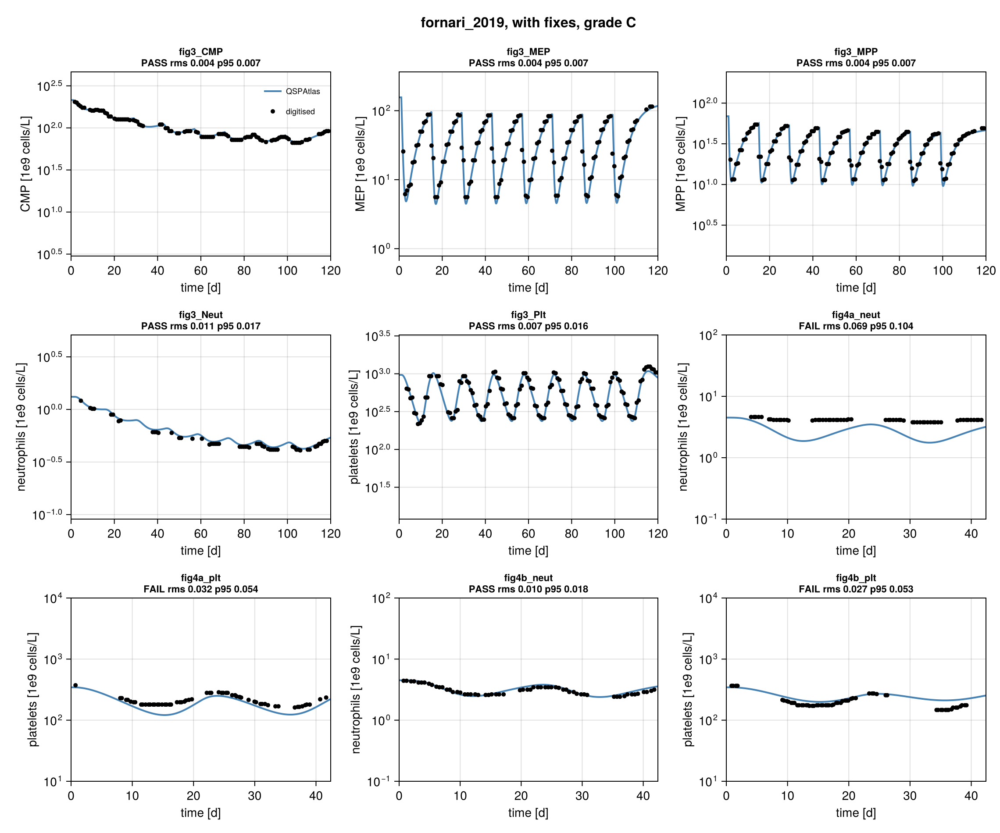
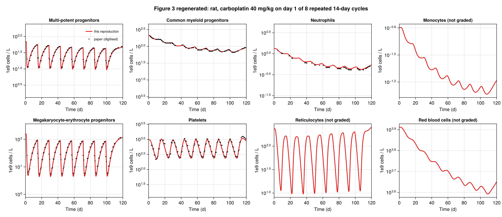
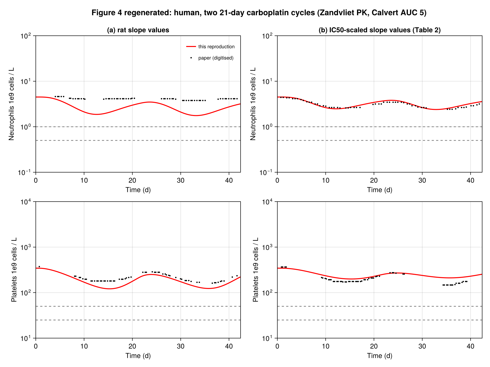

fornari_2019: grade C
Fornari C, Oplustil O'Connor L, Pin C, Smith A, Yates JWT, Cheung SYA, Jodrell DI, Mettetal JT, Collins TA. Quantifying drug-induced bone marrow toxicity using a novel haematopoiesis systems pharmacology model. CPT Pharmacometrics Syst Pharmacol 2019;8:858-868. DOI 10.1002/psp4.12459, PMC6875710.
Grade C (by figure: Fig 3 B, Fig 4 C). The model cannot be run as printed (equations not closed). After documented typo/missing-equation fixes and one evidenced units fix (Table S3 rat PK read per kg, pk_per_kg) all five Figure 3 lines pass (rms 0.004-0.011). Of the human Figure 4 lines (two 21-day cycles, per the figure caption) only 4b neutrophils pass; 4a neutrophils, 4a platelets and 4b platelets fail, so the overall grade is C. Grade follows mechanically from these scores. Strict grade (article and supplement only): D, because Figure 4 needs the human PK from a cited reference and assumed human baselines, and both figures need a standard molecular weight (see Provenance). Working notes: notes.md.
Model
Haematopoiesis as ODE chains (hours, 1e9 cells/L): free carboplatin platinum PK (2 compartments, S5) drives a Damage state (Eq 3: dDamage/dt = kdam Cp - krep Damage). Damage kills the proliferating flux of MPP, CMP, MEP (rate Slope x Damage x kprol x cells, Eqs 1, 2, 4) and of the first two (proliferative) reticulocyte and platelet transit compartments (delta x SlopeMEP, Eq 7). States: HSC source into MPP (Eq 1, zero-order kstem with feedback), MPP -> CMP and MEP (Eqs 1, 4); CMP -> 3 non-proliferative transit compartments -> neutrophils, and -> monocytes (Eqs 5, 6, 9); MEP -> 2 proliferative + 1 non-proliferative transit compartments -> reticulocytes (-> RBC) and platelets (Eqs 7-9). Feedbacks (Eqs 11-13) are powers of baseline/current ratios of mature cells: stem source from CMP and MEP, MPP maturation towards CMP from neutrophils and monocytes and towards MEP from RBC, transit proliferation from reticulocytes/RBC and platelets. All rate constants (ktr, kprol, kstem, a, kcircRet) are derived from baselines, MTTs, kcirc and lambda1..5 by the steady-state algebra of S6/S7; the derived steady state is exact (relative drift below 1e-15 with no drug). 23 states.
Files: model.jl (parameters with sources, derive_rates, haematopoiesis_system), protocol.jl (fixes, dosing, targets, benchmark_setups()), reproduce.jl; evidence and diagnostics outside the graded run: pk_units_check.jl (Table S3 units), dose_scale_from_S3.jl (amount implied by the Fig S3 lines), sensitivity.jl.
Targets
Frozen 2026-11-04 (about 09:49 IST) before any simulation of this model was run; default tolerance (RMS 0.015, P95 0.03 of the axis box), no overrides. All kind curve: the red "mean model prediction" lines of the authors, digitised from the 709 px JPEGs by a red-pixel mask (median row per column), reference/digitise.toml, reference/digitise_run.jl.
| id | figure panel | points | note |
|---|---|---|---|
| fig3MPP, fig3CMP, fig3_MEP | Fig 3 bone marrow, rat 40 mg/kg x8 q14d | 131, 102, 128 | log y |
| fig3Neut, fig3Plt | Fig 3 blood | 54, 129 | neutrophil line is faint under data symbols, first ~20 d and some stretches not traced |
| fig4aneut, fig4aplt | Fig 4a, human, rat slope values | 60 each | red line hidden under the blue Schmitt line for the first ~3-4 d (and where overlapped) |
| fig4bneut, fig4bplt | Fig 4b, human, IC50-scaled slopes (Table 2) | 60 each |
Not targeted: Fig 3 monocytes, reticulocytes, RBC (simulated and plotted, not graded); observation symbols and percentile bands; Fig 4 blue Schmitt/Friberg lines, bands and bar chart (c); Supplement Figs S1, S2, S4-S7.
Calibration: x from tick-label/tick centroids, log y from tick-label glyph centroids (-0.5 px, template-checked on the minor ticks) for Fig 3 and from the frame lines (axis limits are decades) for Fig 4. Verification (figures/digitise_check.png, local only because it contains the paper's figure; points on the lines): Fig 3 x tick "60" within 0.45 px of the interpolated position, MEP 10^1 label within 0.23 px of the two-point interpolation; Fig 4 day-20 tick within 0.2 px; Fig 4 grade 3/4 threshold lines (1, 0.5; 50, 25 x10^9/L) at 129.5/145.0 px, 326.0/342.0 px against 129.5/145.2, 326.5/342.2 predicted from the calibration. Residual calibration uncertainty is about 0.5 px, 0.4 % of the box.
Result
As published: error, model not runnable ("Eq 1 contains fdbkmatMPP ... Eq 9 omits the RBC equation ..."). With fixes (all from score.toml):
| curve | rms | p95 | pass |
|---|---|---|---|
| fig3_MPP | 0.0042 | 0.0068 | yes |
| fig3_CMP | 0.0036 | 0.0067 | yes |
| fig3_MEP | 0.0040 | 0.0073 | yes |
| fig3_Neut | 0.0110 | 0.0167 | yes |
| fig3_Plt | 0.0072 | 0.0155 | yes |
| fig4a_neut | 0.0693 | 0.1036 | no |
| fig4a_plt | 0.0323 | 0.0540 | no |
| fig4b_neut | 0.0099 | 0.0179 | yes |
| fig4b_plt | 0.0275 | 0.0526 | no |
Figures: figures/comparison.png, figures/fig3_regenerated.png, figures/fig4_regenerated.png. The ungraded Fig 3 panels (monocytes, reticulocytes, RBC) also follow the paper's lines by eye, and Supplement Fig S1 (30 mg/kg once, not a target) is matched by the same model (a result of the fixed model, not evidence for the units reading): nadirs MPP 14.5, MEP 8.9, CMP 172, platelets 255, reticulocytes 13.6 (paper about 12, 8.5, 170, 230, 16). The human model does not use the rat PK, so the per-kg fix leaves Fig 4 unchanged.
Sensitivity (diagnostic only, sensitivity.jl; not fitted, does not change the grade)
- Rat PK units. Main (
pk_per_kg, 2.694 umol/kg per mg/kg into VCen 0.26 L/kg) passes all five Fig 3 lines. Reading Table S3 as absolute litres for a 0.320 kg rat (0.862 umol per mg/kg, the previous main run) fails all five (rms 0.068/0.092/0.129/0.134/0.046, MPP/CMP/MEP/Neut/Plt). Dose -5 %: Neut 0.018 fails, others pass; +5 %: all pass. The amount implied by the Fig S3 model line (3.90 umol per mg/kg, which per kg is 43 mg/kg) gives 0.010/0.032/0.010/0.036/0.008. None of these change the grade. - First dose at t = 0 instead of 24 h: all five Fig 3 lines still pass (rms 0.005-0.012).
- Fig 4 (two cycles): bolus vs infusion, a third dose, Neut0/Mono0/Ret0/RBC0 anywhere in the printed ranges and CL 9 L/h do not change the pass/fail pattern much (4b neutrophils 0.009-0.014, 4a neutrophils 0.064-0.071). Eq 10 slopes in (b) give 4b neutrophils 0.014, 4b platelets 0.011 (pass). A single dose (S11/S12 wording) fails all four (0.040-0.069). Halving or doubling the human exposure moves single lines across the tolerance but never passes all four. The human PK and Calvert dose are absolute (L, L/h, mg), so the rat per-kg reading has no counterpart there.
Fixes (used in the "with fixes" run)
| id | kind | what | evidence |
|---|---|---|---|
| eq1_maturation | typo | Eq 1 maturation terms -ktrCMP fdbkmatMPP - ktrMEP fdbkmatMPP replaced by -ktrCMP fdbkmatCMP MPP - ktrMEP fdbkmatMEP MPP | fdbkmatMPP defined nowhere; Eq 4 gain terms are the same fluxes; S4 kstem needs outflow proportional to MPP; text says Eq 12 feedbacks enter Eqs 1 and 4 |
| rbc_equation | missing | add dRBC/dt = kcircRet Ret - kcircRBC RBC | Eq 9 prints four equations; Table 1 kcircRBC; S4 kcircRet = kcirc_RBC RBC0/Ret0; Eqs 12-13 use RBC |
| plttransitrate | typo | platelet T1 loss uses aPlt, not aRet | Eq 8, T2_Plt equation, S3/S4 steady state |
| typicalvaluelines | missing | the red "average" lines simulated as one typical-value run | no IIV model is given; residual error moves the mean by 1.5-1.8 % |
| dose_time | ambiguity | rat doses at t = 24 h + 14 d k (k = 0..7) | Fig S3 hour axis starts at 24 h with the dose at the left edge; Table S1 "day 1"; the text says eight cycles |
| carboplatin_mw | missing | MW 371.25 g/mol for mg to umol | not in the paper; PubChem CID 426756 |
| pkperkg | units | Table S3 QC 0.06, VCen 0.26, VPer 0.30, CL 0.42 read as L/h/kg and L/kg; dose per kg, d mg/kg = d x 1000/371.25 umol/kg into Cen (107.7 at 40 mg/kg) | Table S3 says 'l' and '1/h', code says liter and liter/hour, but: (1) Table S3 was estimated by fitting Eq S1 to the Fig S3 free-Pt data (Table S3 caption); read per kg the model reproduces those data (in-house 30 mg/kg, 16 points: geometric mean obs/model 0.93; Siddik 20 mg/kg, 10 points: 1.22), read as litres for a 0.320 kg rat it is 2.9x and 3.8x below them; these are PK data, not targets; (2) the cited PK source, Siddik et al. 1987 (Biochem Pharmacol 36:1925; abstract only, full text not accessed), reports carboplatin plasma clearance 10.3 mL/min/kg and inulin clearance 10.1 mL/min/kg in a study of mice and rats (the abstract does not say which species these values are from); read per kg, CL 0.42 L/h/kg is 7.0 mL/min/kg, the same order; as absolute litres in a 0.320 kg rat CL is 21.9 mL/min/kg, implausibly twice the GFR of a drug cleared mainly by filtration, with VCen 0.81 L/kg and Vss 1.75 L/kg (above total body water); (3) the Fig S3 data also give a model-free clearance of 0.47 L/h per kg (0.15 L/h for a 0.320 kg rat) against the printed 0.42 (pk_units_check.jl). Table S3 numbers unchanged, nothing fitted |
| human_schedule | ambiguity | two 750 mg doses (Calvert, S11), day 0 and day 21 | Fig 4 caption: "Two cycles of 21 days of carboplatin were simulated. Doses were calculated with the Calvert formula"; S11/S12 say "a single dose" |
| human_pk | missing | Zandvliet 2008 two-compartment PK: CL 0.76 x CrCl + 1.5 L/h, V1 15.5, Q 3.46, V2 9.86; each dose as a 30 min infusion | S11 cites the model but gives no values; values and infusion duration from Zandvliet (PMC2561111) |
| humangfras_crcl | missing | S11 GFR 125 mL/min used as CrCl: CL = 7.2 L/h | the paper does not link GFR to the Zandvliet covariate |
| human_baselines | ambiguity | midpoints of printed ranges: Neut0 4.5, Mono0 5.1, Ret0 77.5, RBC0 5000 | Table 1 prints ranges and names no point (midpoint = assumption); rule declared before any simulation (not read off Fig 4) |
No parameter was fitted to a target or to a figure curve in the graded run. The units reading rests on the non-target Fig S3 PK data, physiology and the cited source; its agreement with Fig 3 (and Fig S1) is a result, not the reason. Table 2 human slopes are used as printed even though they disagree with Eq 10 (below).
Provenance
| fix | kind | basis | stage | runs | figures | evidence |
|---|---|---|---|---|---|---|
| eq1_maturation | typo | paper | before | fixed | all | fdbkmatMPP undefined; Eq 4 fluxes, S4 steady state |
| rbc_equation | missing | supplement | before | fixed | all | S4 kcircRet = kcircRBC RBC0/Ret0 |
| plttransitrate | typo | paper | before | fixed | all | Eq 8 a_Plt, S3/S4 steady state |
| typicalvaluelines | missing | assumption | before | fixed | all | no IIV model for the "average" lines |
| dose_time | ambiguity | supplement | before | fixed | fig3 | Fig S3 dose at 24 h, Table S1 day 1 |
| carboplatin_mw | missing | standard | before | fixed | all | PubChem 371.25 g/mol |
| pkperkg | units | supplement | after | fixed | fig3 | only per kg reproduces the Fig S3 PK data; physiology; Siddik clearance consistent |
| human_schedule | ambiguity | paper | after | fixed | fig4 | Fig 4 caption: two 21-day cycles (added in review, from the caption) |
| human_pk | missing | reference | before | fixed | fig4 | Zandvliet 2008, cited in S11 |
| humangfras_crcl | missing | assumption | before | fixed | fig4 | GFR 125 mL/min used as CrCl |
| human_baselines | ambiguity | assumption | before | fixed | fig4 | midpoints of the Table 1 ranges |
The as-published run has no fills: it stops at the unclosed equations before any dose or human value is needed. pk_per_kg is a units reading adopted after a rebuild found that it matches Figure 3; it stays a fix because the Fig S3 PK data (not a target), physiology and the cited clearance support it without Figure 3 or 4 (details and numbers in notes.md and pk_units_check.jl). The absolute-litre reading is a sensitivity run (pk_absolute_320g, sensitivity.jl). No fix is :from_target, so no passing curve depends on one; the five Figure 3 passes depend on pk_per_kg. Strict grade D (bases :assumption, :standard and :reference).
Issues found in the paper
- Eq 1:
fdbk_mat_MPPundefined, missing factor MPP on both maturation terms (main text, Eq 1). - Eq 4: second line is labelled dCMP/dt, is dMEP/dt.
- Eq 7: platelet T1 equation uses aRet and the label "T1Ptt".
- Eq 9: no RBC equation. Table 1 and S4 imply it. Table 1 does not list the reticulocyte kcirc (derived).
- Supplementary model code (s013): the PDF stops after the parameter mapping (page 4 ends at
k12_Carbo = QC/Vcen_Carbo;); ODE right-hand sides, dosing and solver call are absent. - Dose-to-amount conversion (molecular weight, per-kg basis) is not given anywhere. Table S3 and the code give the PK in litres and litres/hour, but they behave as per-kg values (fix
pk_per_kg): only that reading reproduces the paper's own PK data in Fig S3; read as absolute litres for the stated 0.320 kg rats, CL would be twice the rat GFR and VCen larger than total body water, and the model is about 3x below the paper's own PK observations. - Fig S3: the plotted model line (Cp about 450 uM at the dose, Damage peak 4.77) corresponds to about 117 umol/kg, i.e. about 43 mg/kg, not to the 20 or 30 mg/kg of the caption; the in-house 30 mg/kg observations themselves agree with Table S3 at 30 mg/kg. The Damage curve is also about 13 % higher than the printed Damage ODE gives for the PK line in the same figure (peak 4.13) and decays faster (0.0154/h vs 0.0127/h) although kdam = krep = 0.017.
- Table S3 gives the units of QC and CL as 1/h; the code says L/h; QC and CL should be flows (L/h), and the fitted values behave as per kg (item 6).
- Table S1 (PDF text) lists doses on days 1-85 for study E (seven doses) while Fig 3 and the text show eight cycles.
- Table 1 human baselines for Neut, Mono, Ret, RBC are literature ranges, not values (Mono 0.2-10 spans a factor 50). Human CMP0 20.9 and MEP0 15 differ slightly from 16 x MPP0 and 11 x MPP0 (S9).
- Table 2 human slopes are not Eq 10 applied to Table S2: Eq 10 gives MPP 1.44 (with the CMP ratio; Table S2 has no MPP IC50), CMP 1.03 and MEP 1.21, Table 2 prints 0.79, 0.57 and 0.66. The printed values equal 2.05 x 1.56/4.04 = 0.79, 1.47 x 1.56/4.04 = 0.57 and 2.19 x 0.86/2.83 = 0.67, i.e. within-species MEP/CMP IC50 ratios (human for MPP and CMP, rat for MEP) instead of the rat/human ratio: apparently a row/column mix-up in the IC50 lookup.
- Fig 4 contradicts the slope values: Table 2 human slopes are 2.6-3.3x smaller than the rat slopes, so the (b) predictions should be less toxic than (a), but in the paper's Fig 4 and bar chart (c) (b) is clearly more toxic (neutrophil nadir 2.6 vs flat in (a)). Our model gives the expected ordering. Either panels/labels differ from the description or the scaling is not what Eq 10/Table 2 say.
- S11/S12 say a single carboplatin dose was simulated, but the Fig 4 caption says two 21-day cycles and all Fig 4 lines, including the Schmitt model, show a second trough near day 35 (period about 21 d). The caption is used (fix human_schedule).
- Figure 3 and 4 red lines are "average model predictions" of 1000 virtual subjects with log-additive residual error (Table S4 sigma 0.17-0.19 for neutrophils/CMP), but no inter-individual variability model is given, so only a typical-value simulation can be reproduced. Residual error of that size shifts the mean by only about 1.5-1.8 % and cannot explain a large offset.
- Fig S1: the "Monocytes" panel is a copy of the MPP panel (same red line, bands, axis range and observation symbols).
- Text claims that the model does not reproduce (checked with the fixed model, which matches Fig 3): "platelet nadir 45 % reduction from baseline" (model line, data and our run about 77 %); rebounds "exceeding by 290 % and 180 %" for reticulocytes and platelets (the published lines and our run peak at about 110-120 % of baseline); recovery to 80 % after the last cycle "MEP 12 days, MPP 30 days, CMP about 50 days" (our run 26, 43 and 90 days); kstem "+27 % at maximum" (our run +23 %, close).
What would raise the grade
- The complete supplementary ODE file (right-hand sides, dose conversion, dosing and time grid) and the IIV/residual model behind the "average" lines, which would confirm the per-kg PK reading directly.
- For Fig 4: the human baselines actually used (single values), the slopes used in panel (a), and an confirmation of which IC50 ratios were used for Table 2 (item 11) and of why (b) is more toxic than (a) (item 12).
Review
Independent review, 2026-11-04. The review argued for D because the original dose conversion (3.90 umol per mg/kg) was fitted to the Fig S3 PK curve, which is parameter estimation, and noted that the Fig 4 caption specifies two 21-day cycles and that the report mis-called that schedule circular and over-claimed (line 81, line 86). Final decision: the fitted value is removed and replaced by a first-principles conversion under the documented gap rule (stated minimum body weight 0.320 kg, MW 371.25), and the grade follows from the resulting scores.
Changes this round: (1) dose_scale now 0.320 kg x 1000 / 371.25 (S1 weight, PubChem MW); the S3-implied 3.9 is kept only as an ungraded diagnostic (dose_scale_from_S3.jl, sensitivity.jl). (2) New fix human_schedule (:ambiguity): two doses, day 0 and 21, from the Fig 4 caption; the claim that this was circular is removed. (3) Grade recomputed from the new scores (C; Fig 3 now fails all five lines, Fig 4 passes only 4b neutrophils). (4) "No parameter was re-estimated" reworded, residual-error statement corrected (1.5-1.8 % mean shift), unsupported "likely pass" claim removed. Targets and tolerances were not changed.
Changes after the self-check (2026-11-04): the dose_scale fix (0.320 kg absolute reading) is replaced by the pk_per_kg units fix; the absolute reading is kept as a sensitivity run. Rescored: Fig 3 all five pass, Fig 4 unchanged (only 4b neutrophils pass); grade C (Fig 3 B, Fig 4 C). Targets, reference CSVs and tolerances were not changed.
Self-check (2026-11-04)
An independent rebuild from the paper and supplement alone (no access to this implementation) agreed on the closure fixes (Eq 1 maturation terms, added RBC equation, aPlt in Eq 7, dose on day 1, eight cycles, two human cycles) and found the per-kg reading of Table S3, under which all eight Fig 3 panels and Fig S1 reproduce while the absolute-litre reading is 3x below the paper's PK observations. It also found issues 15 and 16, the Fig S3 dose mismatch (item 7) and the IC50 lookup pattern (item 11). The per-kg reading was then checked here against evidence that does not use the target figures (the Fig S3 PK data, physiology, the cited source; `pkunits_check.jl`) before it was adopted; a separate check on 2026-11-05 confirmed it from the exact Fig S3 marker coordinates.
Literature check (2026-11-04)
Every human slope in Table 2 equals the value from Eq. 10 multiplied by an extra 0.551, which is the MEP IC50 ratio (0.86/1.56): the ratio appears to have been applied twice. This is a likely source of the Figure 4 discrepancies. The authors' PAGE 2018 poster (https://www.page-meeting.org/wp-content/uploads/pdfabstracts/8003-PAGE18Fornari.pdf) scales by IC90 rather than IC50. The rat body weight, the full model code and the Figure 4 schedule were not found in any public source.
Figures

Simulation (blue) against points digitised from the paper's figure (black), per target curve.

Regenerated in the paper's layout: fig3 regenerated.

Regenerated in the paper's layout: fig4 regenerated.
Score file
Generated by reproduce.jl; source: models/fornari_2019/score.toml.
as published (did not run: NotRunnable: model as printed cannot be run: Eq 1 contains fdbkmatMPP, which is defined nowhere (Eq 12 defines fdbkmatCMP and fdbkmatMEP), and its maturation terms lack the factor MPP, so the steady state of supplement S6 is violated; Eq 9 omits the RBC equation; Eq 7 uses a_Ret in the platelet T1 equation. The supplementary ODE code (s013) is truncated before the right-hand sides.)
| curve | figure | RMS | P95 | tolerance (RMS / P95) | pass | coverage (reference / simulation, points) | |–-|–-|–-|–-|–-|–-|–-|
Coverage is the span of the digitised reference x values as a share of the axis, then the share of the axis on which the simulation is defined, and the number of reference points. It is reported only and does not change the grade.
with fixes
| curve | figure | RMS | P95 | tolerance (RMS / P95) | pass | coverage (reference / simulation, points) |
|---|---|---|---|---|---|---|
fig3_CMP | Figure 3, common myeloid progenitors, mean model prediction | 0.003593 | 0.006722 | 0.015 / 0.03 | yes | 98 % / 100 %, 102 |
fig3_MEP | Figure 3, megakaryocyte-erythrocyte progenitors, mean model prediction | 0.004045 | 0.007336 | 0.015 / 0.03 | yes | 96 % / 100 %, 128 |
fig3_MPP | Figure 3, multipotent progenitors (rat, carboplatin 40 mg/kg x8 q14d), mean model prediction | 0.004206 | 0.006753 | 0.015 / 0.03 | yes | 98 % / 100 %, 131 |
fig3_Neut | Figure 3, neutrophils, mean model prediction | 0.01104 | 0.01672 | 0.015 / 0.03 | yes | 95 % / 100 %, 54 |
fig3_Plt | Figure 3, platelets, mean model prediction | 0.007219 | 0.01554 | 0.015 / 0.03 | yes | 97 % / 100 %, 129 |
fig4a_neut | Figure 4a top, human neutrophils, model prediction with rat slope values (red line) | 0.06926 | 0.1036 | 0.015 / 0.03 | no | 89 % / 100 %, 60 |
fig4a_plt | Figure 4a bottom, human platelets, model prediction with rat slope values (red line) | 0.03229 | 0.05398 | 0.015 / 0.03 | no | 97 % / 100 %, 60 |
fig4b_neut | Figure 4b top, human neutrophils, model prediction with IC50-scaled slope values (red line) | 0.009933 | 0.01788 | 0.015 / 0.03 | yes | 97 % / 100 %, 60 |
fig4b_plt | Figure 4b bottom, human platelets, model prediction with IC50-scaled slope values (red line) | 0.02745 | 0.05258 | 0.015 / 0.03 | no | 90 % / 100 %, 60 |
Coverage is the span of the digitised reference x values as a share of the axis, then the share of the axis on which the simulation is defined, and the number of reference points. It is reported only and does not change the grade.
Source: models/fornari_2019/